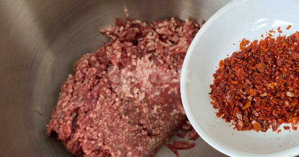
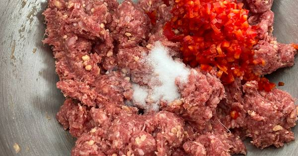
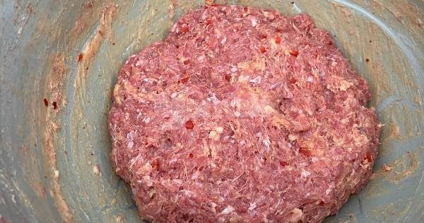
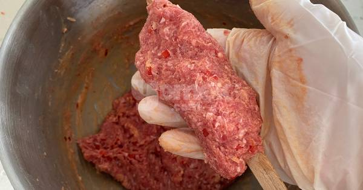
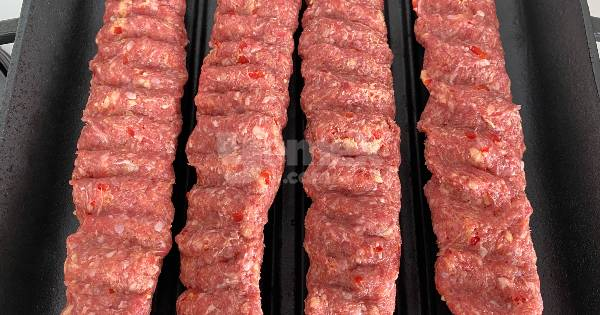
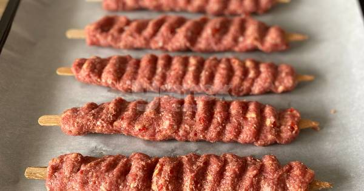
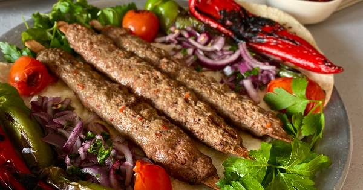

Ingredients
- 600 gr mince
- one tsp chili pepper
- 1/2 tsp salt
- 1/4 tsp black pepper
- one tsp butter
- one capia pepper
Method
- Add chili pepper to mince and knead for 15 min.

- After 15 min, add chopped capia pepper and butter, keep knead for 5 more min.

- Your well knead mince should look like this.If it is, that mean we are ready for put mince to sish.

- Take pieces from the minced meat and put them on the sish.

- Let them rest in refrigerator for 5 hour.

- Heat the oven to 180C. After 20 min your kebab will be ready

- You can serve with garniture and ayran.Bon appetit!
